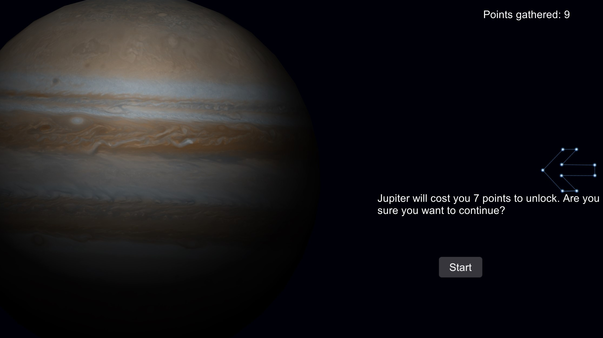

In SpaceDom, you can start a quiz about a planet of your choice. My aim was to create an interactive christmass-style tree from which you can select a planet.
A video preview of the game
Upon opening the app, you are greeted by the main menu of the game. New Game, Options and Exit are the options you are given but after the creation of a new game, there's a new option called Continue which allows you to continue your process.
In the Οptions menu, you can control the sounds and also delete the process you made
Once you enter the game you can see a cosmic christmass tree. This is where you choose a planet to start a quiz, but to unlock it you first need to have the required points earned by previous planets.

If the planet selected is available, an animation brings the camera close to the planet. The tree gets hidden in the process and a message to verify your next move.
This is where the quiz is taking place. 10 questions are asked. All of them are randomized both questions and answers. You have 15 seconds the make the right choice.
After the end of the quiz you get a message based on how you did and the option to start a quiz for a new planet, the option to go back to the main menu or just exit.